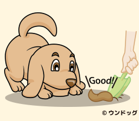
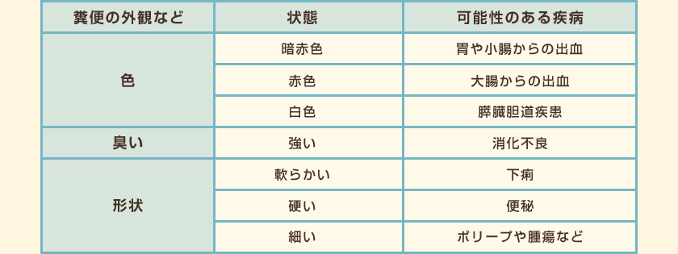
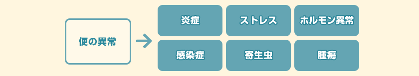
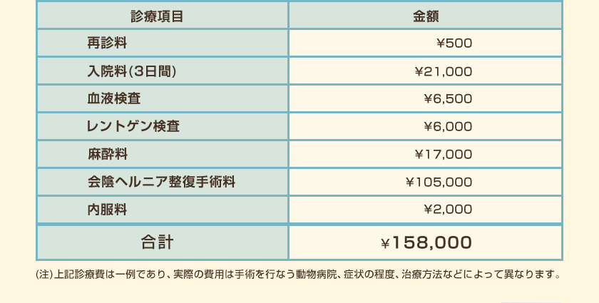
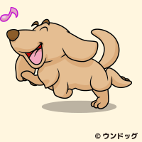

日常生活でペットの健康チェックができるバロメーターのひとつとして、糞便があります。
普段から、日々の変化を見逃さないよう便の状態をチェックしておきましょう。

まず便の色、臭い、形状を観察します。食事の内容により変化しますが、黒っぽい色の便の時は胃や小腸からの出血、血の混じったような便の時は大腸からの出血が疑われます。
便の臭いが強い場合は、腸内細菌叢の乱れや消化不良などが原因かもしれません。
下痢は何らかの原因で便に含まれる水分が多くなった時に生じるもので、逆に硬すぎる便の場合は水分が吸収され過ぎている状態、すなわち便秘症などが考えられます。また、細い便が出る場合は、ポリープや腫瘍など大腸周辺に異常がある場合があります。

便の異常は、消化吸収の悪いものを食べた時など一時的なこともありますが、感染、炎症、ストレス、ホルモン異常や腫瘍など様々な病気の可能性も考えられます。また、仔犬や仔猫の場合は寄生虫が原因であることが多く、下痢の状態を放っておくと衰弱し命を落としてしまうこともあります。便の量や回数が変化したり、排泄する時の姿勢や様子が変化した時も注意しましょう。このように日々の便をチェックしておき、今日の便はなんだかいつもと違うな、と思った時は動物病院で検査をしてもらいましょう。

6歳のモコちゃん（雑種未去勢オス）。
食欲旺盛、元気いっぱいでしたが、少し前から排便に時間がかかり、便が出にくい様子がみられるようになりました。排便時に痛がったり、血液が混じったような赤い便をするようになったので、便を持って動物病院へ行くことにしました。
糞便検査の結果、出血性下痢症、原因は会陰ヘルニアという診断でした。
会陰ヘルニアとはおしりの筋肉に隙間ができ、その隙間から腸が飛び出して便が溜まってしまう病気です。男性ホルモンに関連していることが示唆されており、去勢手術をしていない雄犬に多いとのことでした。内科療法では完治は難しく、外科手術による整復が必要との診断を受けました。


一見元気でも実は手術が必要な病気だったりするケースもあります。
ちょっと便秘気味なのかな？と軽い気持ちでいたら動物病院で手術を勧められたなんてことも・・・
もし「いざというとき、最良の治療を受けさせてあげたい」と考えるなら、高額になりがちな入院・手術を補償するau損保のペット保険をおススメします。